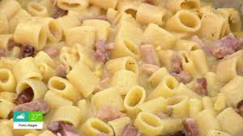

Pasta

Description
Massa é sempre uma excelente opção.
Esta receita é compresunto e molho branco
Ingredients
- 300g de talharim
- 100g de presunto
- 100g de queijo mussarela
- meia cebola
- 1 caixa demolho branco pronto
- 2 pitadas de sal
Steps
- Cozinhe a massa sem deixar ficar molenga
- Pique o presunto e o queijo e corte a cebola em pedacos pequenos
- Refogue a cebola, junte o presunto , o queijo e o molho branco, tempere com o sal
- Escorra o macarrão e misture no molho